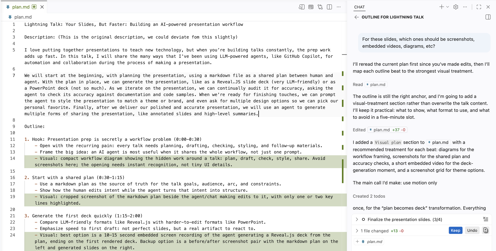
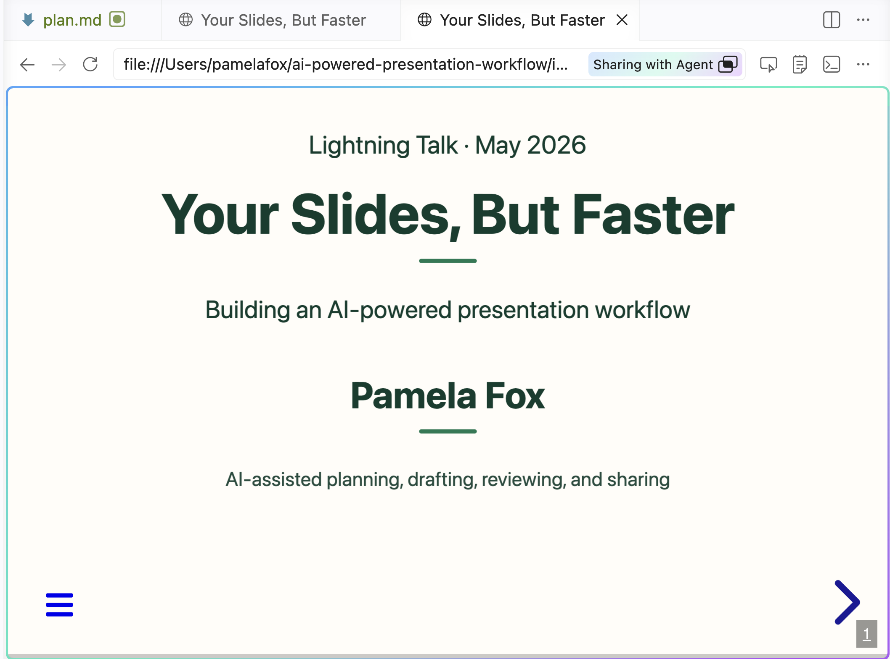
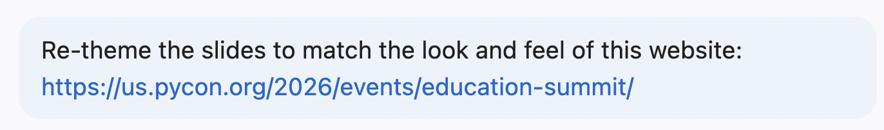
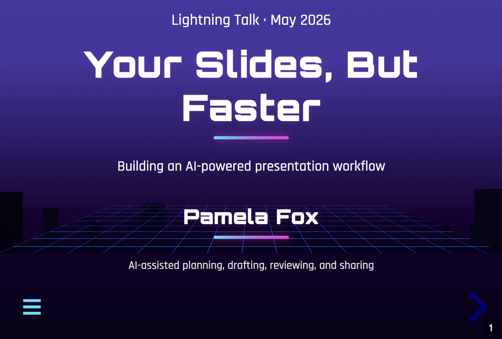
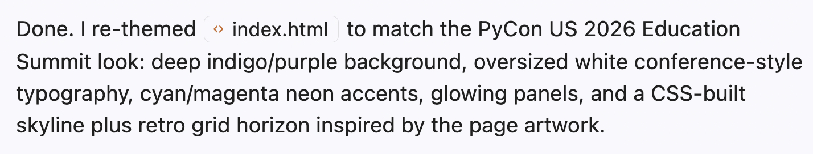
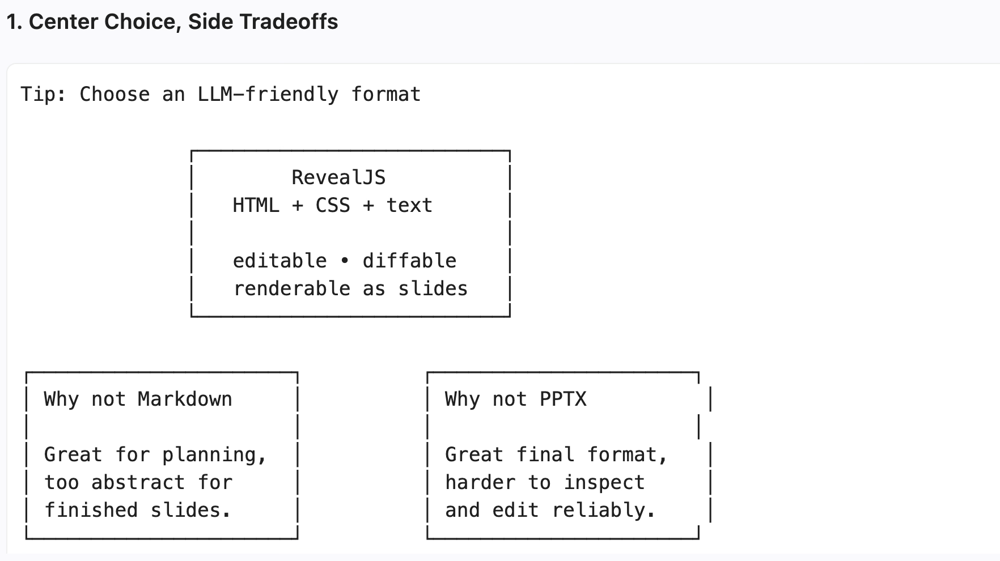
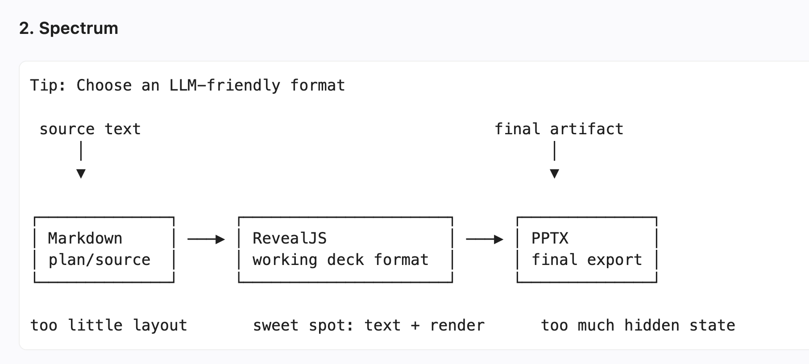
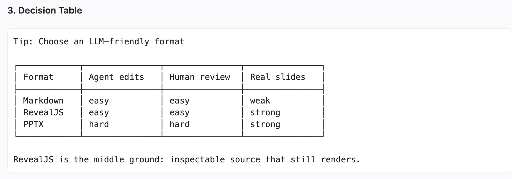
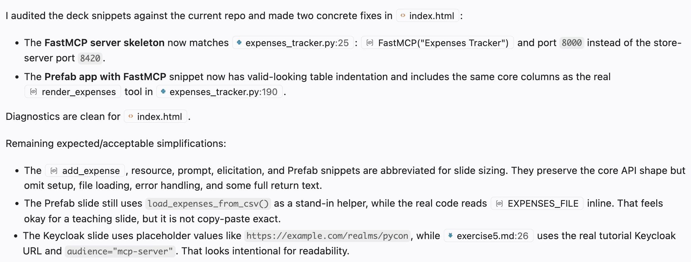

Every talk moves from planning into a build loop, then delivery, then follow-up materials.
01Plan
Goals, audience, outline
02Draft
First real artifact
03Style
Theme, font, colors
04Iterate
Tighten slide content
05Audit
Claims and examples
06Present
Deliver the talk
07Share
Writeups and alternate formats
Step 1: Start with a markdown plan
The plan is shared memory: intent, structure, and constraints in one editable place.

Step 2: Generate deck based off the plan
Tip: Choose an LLM-friendly format
Format
Agent editability
Human reviewability
Visual expressivity
Markdown
Easy to write
Easy to diff
Text-first, limited layout
PPTX
Hard to edit reliably
Hard to diff
Rich manual canvas
RevealJSChosen
HTML, CSS, text
Readable diffs
SVG, diagrams, video, CSS
Step 3: Re-theme the slides with style, colors, fonts

Before
UUser prompt


After
AAgent response

Step 4: Iterate on style and content
Once the initial deck exists, improve it with manual edits or small, reviewable asks.
Style passes browser-verified
User: Can video be bigger?
Agent: Adjusts sizing and verifies the rendered slide.
User: Use fragment for each row so I can explain one by one.
Agent: Adds Reveal fragments and hides borders before rows appear.
User: I want the badges directly on top of the box. Move both boxes underneath the image.
Agent: Moves the boxes below the screenshots and attaches the badges.
Content passes
User: I dont like this wording, give me 5 other options. Some that talk about shared memory.
Agent: Offers options, then swaps in the selected sentence.
User: Let's add a slide about agent skills. Research agentskills.io/home to see how they explain it.
Agent: Uses the docs framing to explain skills, then connects it to this deck workflow.
User: We need a new slide about Step 4: Iterate. Not sure what to show here.
Agent: Proposes slide directions, then turns the selected one into a new slide.
Tip: Ask agent for ASCII slide mockups
UUser prompt
Mock up ASCII diagrams of different options for slide on "Choose an LLM-friendly format".



Step 5: Audit the deck against reality
UUser prompt
Audit the sample code in #file:index.html to ensure it is consistent with the code in the repo. Some inconsistency might be expected for slide sizing reasons.
AAgent response

Step 6: Present the talk
This is the human step: the workflow has prepared the room, but you still own the story.
YOU
Take the stage
The agent does not present. It helped make the talk easier to deliver.
Final deck
Designed, reviewed, and ready to run in the room.
Speaker notes
Your reminders stay attached to the slides, not scattered across chat history.
Backup context
Sources, prompts, and decisions remain nearby when questions come up.
Step 7: Turn the talk into shareable artifacts
After delivery, reuse the preserved workflow artifacts instead of starting the follow-up work from scratch.